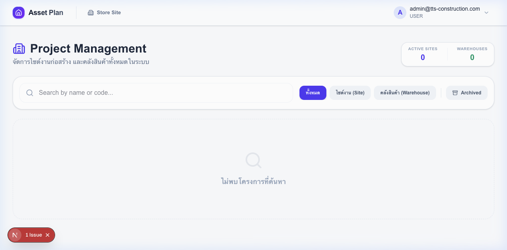
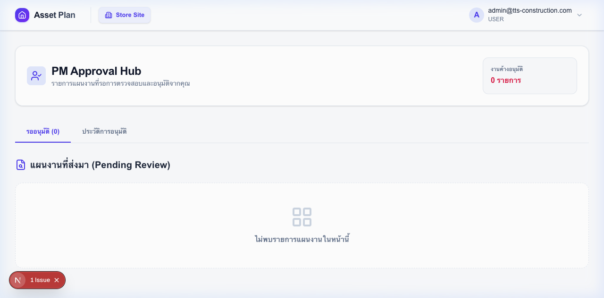
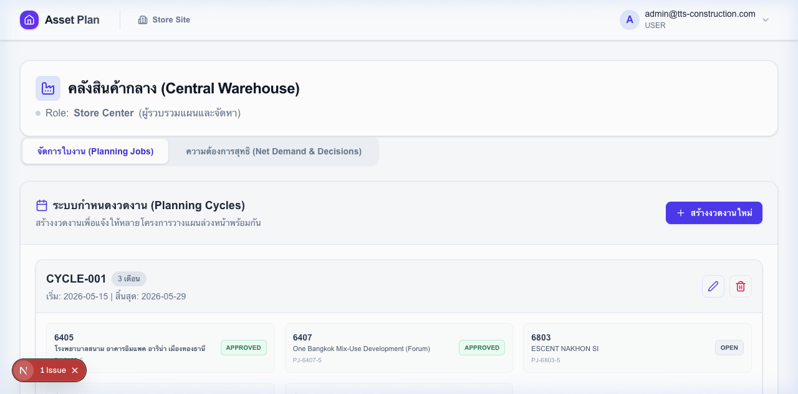
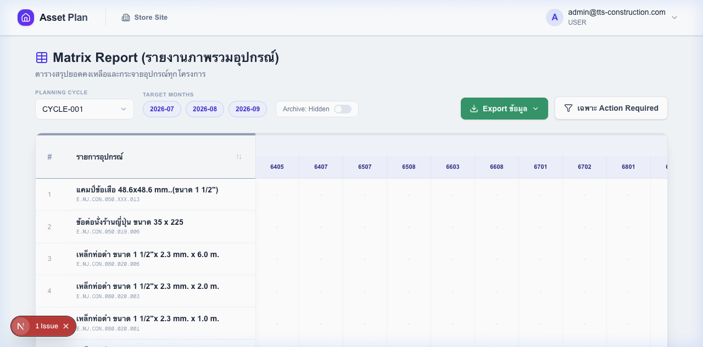

ASSET PLAN
ระบบบริหารจัดการครุภัณฑ์แบบ Role-Based
สำหรับโครงการก่อสร้างหลายไซต์ในองค์กรเดียว
→ Arrow / Space เพื่อเริ่ม
ก่อนมีระบบ
ปัญหาที่ พบบ่อยในการบริหารครุภัณฑ์
ไม่มี Single Source of Truth
แต่ละไซต์ทำ Excel แยกกัน → ข้อมูลไม่ตรงกัน → ไม่รู้ว่าคลังกลางมีของจริงเท่าไหร่
สั่งซื้อซ้ำซ้อน / ขาดของกะทันหัน
ไม่มี Visibility ว่าไซต์อื่นมีของเหลือไหม → สั่งใหม่ทั้งที่หมุนเวียนได้ หรือขาดของโดยไม่มีแผนสำรอง
ไม่มี Approval Workflow
PM ไม่มีช่องทางตรวจสอบแผนอย่างเป็นระบบ → ผ่านทาง Line / โทรศัพท์ → ไม่มี Audit Trail
Asset Plan แก้ปัญหาทั้ง 3 ข้อนี้ด้วยกระบวนการเดียว เชื่อมทุกบทบาทบน Platform เดียวกัน
ทางออก
ระบบเดียว จัดการทุกไซต์
บริหารครุภัณฑ์จาก 54+ โครงการ ผ่าน 4 บทบาทที่ทำงานต่อเนื่องกัน — ไม่มีข้อมูลตกหล่น ไม่มีการสั่งซ้ำ
PLAN
ทุกไซต์วางแผนรายเดือน ล่วงหน้า 1–3 เดือน พร้อมกันในรอบแผนเดียวกัน
APPROVE
PM ตรวจสอบ แก้ไข และอนุมัติพร้อม Audit Trail — มีระบบ Reject + เหตุผลกลับไซต์
ALLOCATE
คลังกลางเลือก 5 วิธีจัดสรร — เบิก หมุนเวียน สลับสเปก จัดซื้อ เช่า
กระบวนการ
End-to-End Workflow
ตั้งค่าระบบ
Master Data · โครงการ · ผู้ใช้ · สิทธิ์
สร้างรอบแผน
กำหนดเดือน · เลือกไซต์ · ตั้ง Deadline
กรอก + ส่งแผน
รายเดือน · Auto-fill · ส่ง 1 คลิก
อนุมัติแผน
ตรวจ · แก้ตัวเลข · Approve
จัดสรร
5 วิธี · Bulk · ติดตาม
Matrix Report
Export · Procurement Plan
ทุกขั้นตอนมี Status Badge ที่ตามได้ Real-time — ทุก Role รู้ว่าตัวเองต้องทำอะไรต่อ
System Administrator
ตั้งค่าครั้งเดียว — ทั้งระบบพร้อมใช้งาน ควบคุมสิทธิ์ทุกระดับจากที่เดียว
- Master Data — จัดการรายการครุภัณฑ์ทั้งหมด, หมวดหมู่, สต็อกคลังกลาง Import CSV ทีละจำนวนมากได้
- 54+ โครงการ — แยก SITE / WAREHOUSE, Archive โครงการเสร็จแล้วโดยไม่สูญเสียข้อมูล
- Project Roles — กำหนด STORE_SITE / PM / VIEWER ต่อโครงการ ผู้ใช้ 1 คนมีได้หลาย Role


Store Site
กรอกแผนล่วงหน้า 1–3 เดือน ด้วย UX ที่ออกแบบมาเพื่อทีมหน้างาน ไม่ต้องใช้ Excel
- Auto-fill ด้วย Enter — กรอกเดือนแรก กด Enter ระบบ copy ไปเดือนที่เหลือทันที + เลื่อนแถวถัดไปอัตโนมัติ
- Real-time Stock — เห็นยอดคลังกลางปัจจุบันทุกแถว ก่อนตัดสินใจขอ
- Save Draft + Submit — บันทึกร่างเพื่อกลับมาแก้ หรือส่ง PM ได้ทันที · ติดตาม Status ได้ตลอด
Project Manager
ตรวจสอบและตัดสินใจได้เร็วขึ้น ด้วย Mode Filter ที่โฟกัสเฉพาะส่วนที่สำคัญ
- Mode Filter — ดูเฉพาะ DEMAND / RETURN / CHANGED แทนที่จะไล่ทุกแถว ลดเวลาตรวจสอบ
- แก้ตัวเลขได้โดยตรง — ไม่ต้องส่งกลับให้ไซต์แก้ · Log บันทึกทุก Cell ที่เปลี่ยน · ดูได้ใน Mode CHANGED
- Approve หรือ Reject — Reject ต้องใส่เหตุผล · ไซต์แก้ไขและส่งใหม่ได้ทันที · ประวัติทุกรอบดูได้ใน History


Store Center
ศูนย์กลางการจัดสรรที่ฉลาดกว่า — เลือกวิธีที่เหมาะสมที่สุดสำหรับแต่ละรายการ
- Bulk Dispatch — เลือกหลายรายการแล้วเบิกจ่ายทีเดียว กรอง READY ก่อนเพื่อเห็นเฉพาะที่ทำได้
- History Rollback — ลบ Decision ที่ผิดได้ · ระบบ Reverse สต็อกให้อัตโนมัติ · ไม่ต้องแก้ Master Data
Executive View
Matrix Report
ภาพรวมความต้องการจากทุกไซต์ในตารางเดียว — สำหรับผู้บริหารและทีมจัดซื้อ

Pivot Table ทุกไซต์ × ทุกครุภัณฑ์ × ทุกเดือน
Export Excel 2 รูปแบบ — ตามที่กรองไว้ หรือทั้งรอบ
Hover Tooltip ดูรายละเอียดต่อโครงการได้ทันที
ตัวเลขที่พูดแทน
ออกแบบมาเพื่อ Scale
พื้นฐานทางเทคนิค
Built for Enterprise
เทคโนโลยีระดับ Production ที่ Scale ได้โดยไม่ต้องดูแล Infrastructure
Next.js 16 + React 19
App Router, React Server Components, Streaming SSR — หน้าโหลดเร็วแม้ข้อมูลมาก
Cloudflare D1
Serverless SQL ที่ edge — ไม่มี DB Server ให้ดูแล · Auto-backup · Global availability
JWT Auth + Role Guards
Cookie-based session · ตรวจ Role ทุก API endpoint · Project-level permission granularity
Web-based · ไม่ต้องติดตั้ง
เปิด Browser แล้วใช้งานได้ทันที — ทำงานบน Desktop, Laptop, Tablet ทุกระบบปฏิบัติการ
เริ่มได้ วันนี้
ตั้งค่าระบบครั้งแรก ใช้เวลา < 1 ชั่วโมง ทีมทุกคนพร้อมใช้งานได้ภายในวันเดียวกัน
Admin ตั้งค่า
Master Data · โครงการ · ผู้ใช้ · สิทธิ์
~30 นาที
สร้างรอบแผนแรก
Store Center เปิดรอบ เลือกไซต์ ตั้ง Deadline
~5 นาที
ทีมเริ่มใช้งาน
ไซต์กรอกแผน → PM อนุมัติ → Center จัดสรร
Fully operational
© 2026 Asset Plan System — TTS Construction